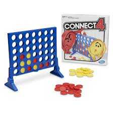
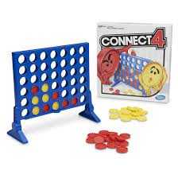

Lab 4: Pseudocoding and Problem-solving
Challenge
We found coming up with ideas for each section difficult.
We also found it chalenging to determine exactly what we
were supposed to do and what was required of us.
Problems
Teletype was hard to connect to so we had to fix it.
Images were in one partners folder and not the others.
One persons laptop took a long time to start so we had to start by only working on one laptop.
Results
-
make a salad
- Get ingredients. avocado, lettuce, tomato, carrots, croutons, dressing
- Cut lettuce and other ingredients
- Put ingredients in bowl
- Put lettuce in a bowl first.
- Then avocado, tomato, carrots, and croutons.
- Then dressing on top.
- Then MIX
- Then eat
- Digest
-
Create connect four!
- Create board
- Create piece for current player
- Let player pick move
- Pieces should fall to bottom of board
- Check for win condition
- Move to other player
- Repeat 2-6 until winner pieces connect 4
// Summary. make connect 4.
// Description. make a two player game of connect 4.
// @link URL
// @file This files defines the gameplay loop for connect 4
// @author Aidan Sterling, Jacqueline Wong .
// @since 1.0.0
// Create connect four!
// Create board
// Create piece for current player
// Let player pick move
// Pieces should fall to bottom of board
// Check for win condition
// Move to other player
// Repeat 2-6 until winner pieces connect 4
 
